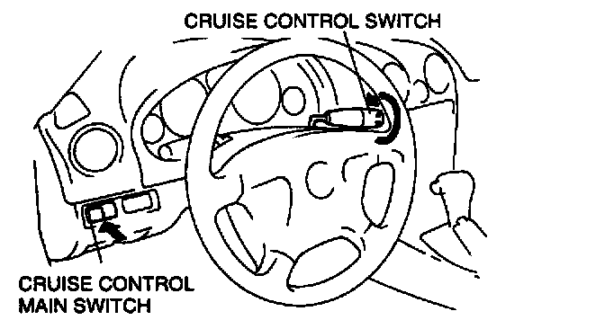

In Detection Mode
Inspection of Diagnostic Trouble Codes for Condition Detection ModeUsing the cruise set indicator light
NOTE:
- If the RESUME/ACCEL switch on the cruise control switch is malfunctioning, the cruise set indicator light will not give a correct indication when you inspect the system. Use the SST (NGS set) to determine the cause of the malfunction.
1. Drive the vehicle at over 16 kph (10 mile/h).
2. Operate each of the cruise control switches.
3. Stop the vehicle and let it idle.
4. Turn on the cruise control main switch.

5. Turn and hold the RESUME/ACCEL switch on for at least 3 seconds. The cruise set indicator light will illuminate for 3 seconds, and then go off for at least 2 seconds. Thus, the condition detection mode begins.
6. If a diagnostic trouble code is indicated, inspect the corresponding system area.
7. The condition detection mode is canceled by turning the ignition switch to LOCK or turning off the cruise control main switch.